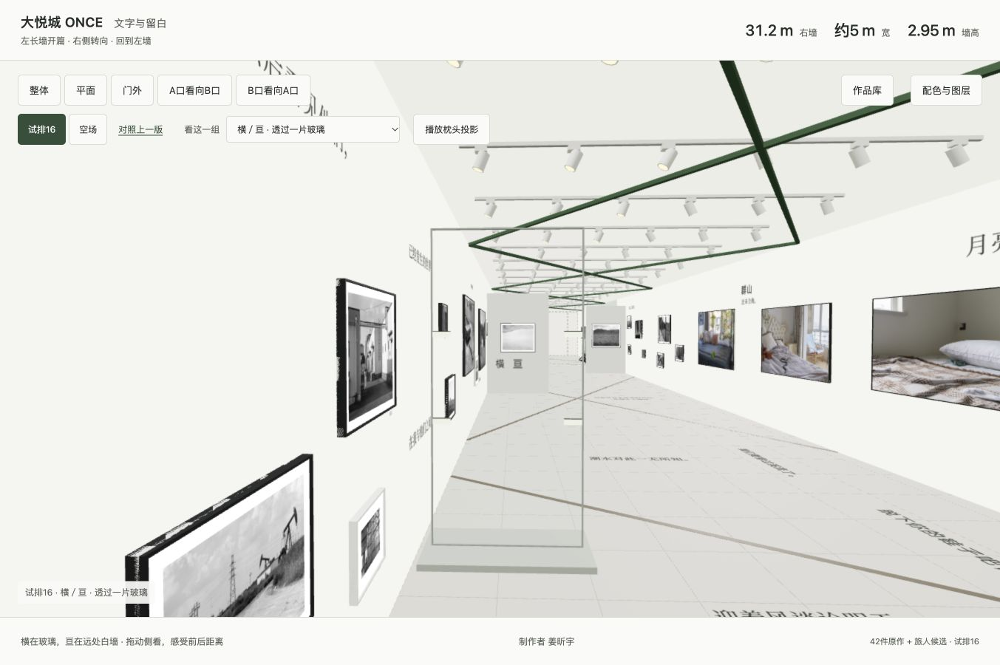
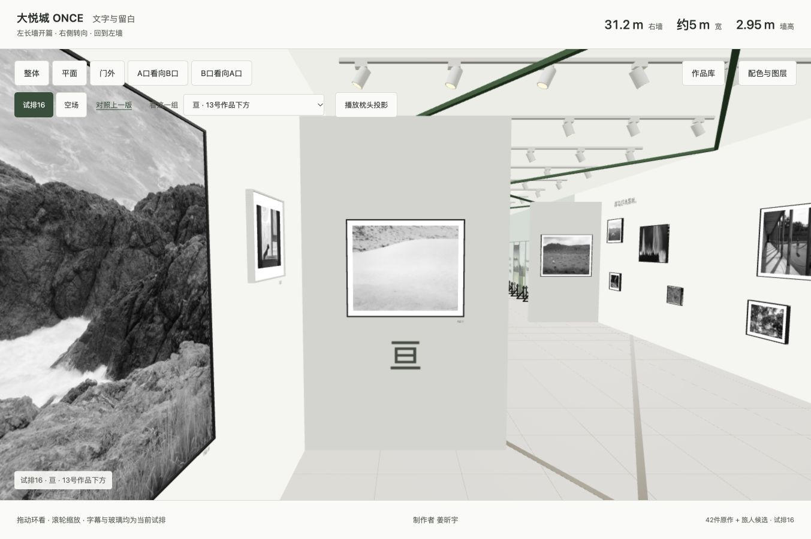
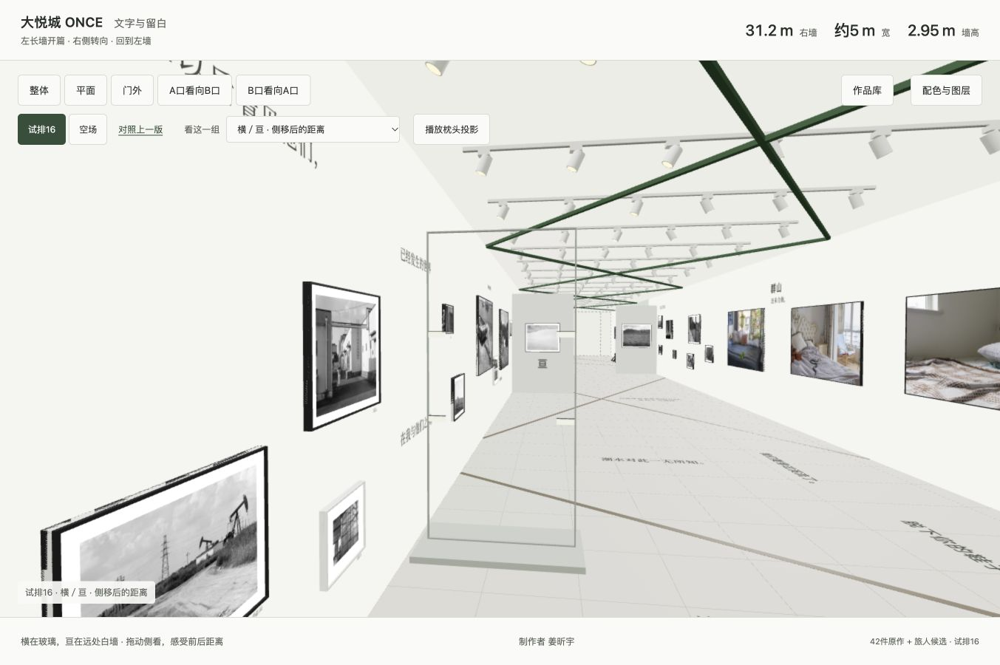
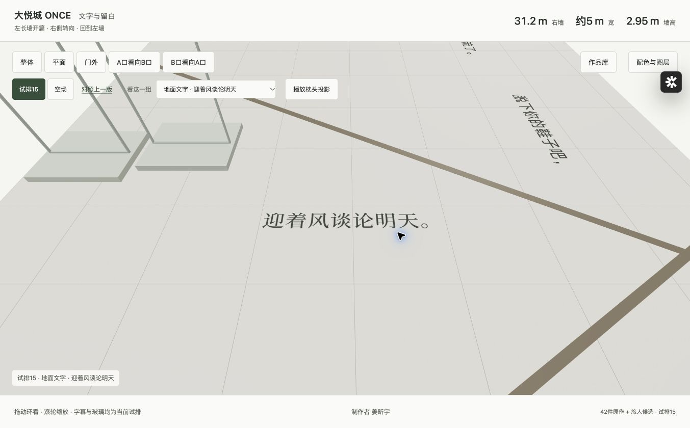
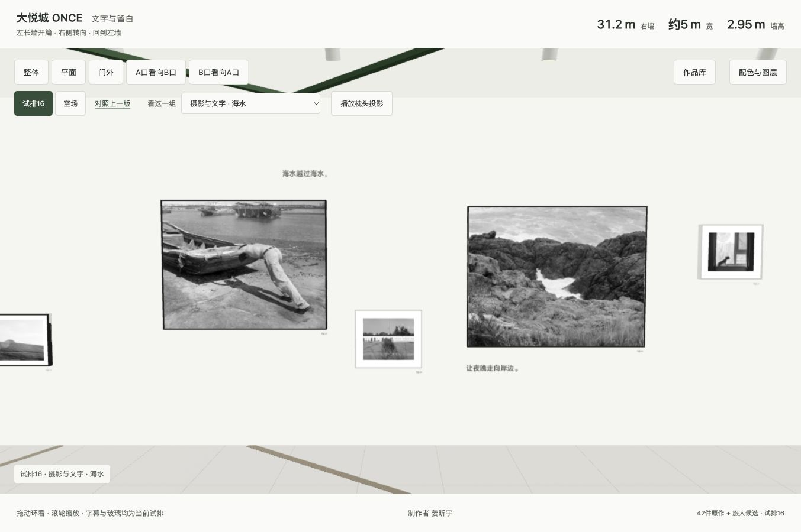
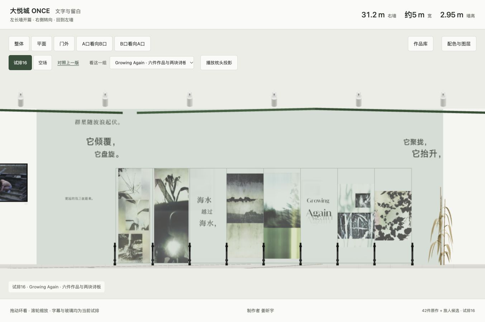

我在以后看见他们，
思源宋体 · Regular
思源宋体常规的笔画起伏保留细读的节奏；同句每个字使用同一字重，不突出“以后”作标题。
完整一行，轻疏字距；在入口摄影上方给观众一段可记住的开头。
参考的逻辑与取舍
参考“静谧感”的连续阅读与留白，不移植蓝色、纸面网格或海报构图。
把“以后”放大、或把各字散开，会过早规定观看节奏。
当前字样占幅 99.4 × 17.9 cm · 含透明边距
在展厅中看大悦城 ONCE · 文字重设计讨论稿
从“让文字更显眼”，转向逐句判断：它在这里，究竟让观众读到什么、看见什么。

我们在这里把“透明性”理解为：读者穿过字形，进入语句引起的画面、动作与关系。细字、灰字、玻璃本身都不能保证这一点。完整的语组、恰当的字距和清楚的阅读次序，才让字形能够适时退后。
Warde以“看玻璃／透过玻璃看”讨论阅读排印；这是一个可借用的判断工具，并不等于韦纳对所有文字作品的定义。原文
韦纳会挑选字体，也警惕字体变成自己的固定标志。他关心语言能唤起的材料关系与观众的理解。由此得到的设计判断是：先确定一句话在空间里的作用，再决定字的样貌。2015年访谈
“横／亘”由两个平面分开；“Again”的轻微重影让重复可见；其余完整句子维持稳定语气。每个字有理由，往往意味着它应留在同一句话的共同规则中。





思源宋体 · Regular
思源宋体常规的笔画起伏保留细读的节奏；同句每个字使用同一字重，不突出“以后”作标题。
完整一行，轻疏字距；在入口摄影上方给观众一段可记住的开头。
参考“静谧感”的连续阅读与留白，不移植蓝色、纸面网格或海报构图。
把“以后”放大、或把各字散开，会过早规定观看节奏。
当前字样占幅 99.4 × 17.9 cm · 含透明边距
在展厅中看思源宋体 · Medium
全句用思源宋体中等字重；地面斜视会压缩细笔画，因此比墙面连续句稍重。
“迎着风谈论明天”共用字号和基线；读者可以边走边把句子读完。
借鉴参考中统一字重、紧密语组与外部留白的关系。
不把“风”倾斜成风的图示；语义不需要这样的重复解释。
当前字样占幅 112.0 × 20.0 cm · 含透明边距
在展厅中看汉仪旗黑X1 · 65W / 思源宋体 · Regular
群山用旗黑X1中等字重形成一个短、清楚的词组；续句回到诗歌正文宋体。
两行之间保留空隙；它位于《一切正常》最后两图之间，保留70、70、95厘米的不等间距。
借鉴“力量感”的短锚点与留白，不把整句都做粗大。
不做山形字、不贴满间隙，也不为整齐把照片间距平均化。
当前字样占幅 54.2 × 43.4 cm · 含透明边距
在展厅中看思源宋体 · Medium
两行同用思源宋体中等字重，与另一处地诗相认；“河流”和“每个人”不分别换字体。
下句右移三个字身，沿同一方向接续；两行间距只容纳一次短停顿。
借鉴排版参考的错位对齐：位置有变化，阅读方向不破碎。
不弯曲成河道，不逐字起伏，不为了流动感加装饰曲线。
当前字样占幅 148.6 × 42.6 cm · 含透明边距
在展厅中看思源宋体 · Regular
与“在我与他们之间”同用思源宋体常规，维持一句话的身份。
句首仍在邻近白墙上部；玻璃上只留“横”，远处13号作品所在活动墙承载“亘”。
借鉴以组为单位安排信息和间隔，保持可返回的句法线索。
不把前后句也贴在玻璃上，不用额外箭头解释装置。
当前字样占幅 78.2 × 16.3 cm · 含透明边距
在展厅中看汉仪旗黑X1 · 55W
旗黑X1常规，原生字宽；较均匀的笔画使单字在透视背景上有轮廓，不需要描边或巨大的字重。
“横”独占前段一片玻璃，原生字身6.8厘米。玻璃周围留空，让实际纵深参与阅读。
在大块留白里保留可辨的单字；两种实体载体与前后距离构成关系，而非复制参考的字形。
不拉长“横”的横画，也不把字放大来模拟阻隔；分离本身已经在工作。
当前字样占幅 13.0 × 13.1 cm · 含透明边距
在展厅中看汉仪旗黑X1 · 55W
与“横”同用旗黑X1常规和同一字色。只增加实际尺寸以补偿纵深，不改变字形比例；相近的视角字高把两字重新连成一个词。
“亘”位于13号作品下方，原生字身28厘米；从前段停步点透过玻璃观看，字面高度与“横”近似相等。
把文字与物体的距离交给观看者体验。一个词跨越透明玻璃与白色板墙，移动带来的错位才是形式变化。
不另选一款奇特字体，也不把玻璃物理透明等同于文字的语义透明。
当前字样占幅 30.1 × 29.0 cm · 含透明边距
在展厅中看思源宋体 · Regular
与前半句同字体、同字号，让观众在回望时认出它们属于同一句。
后半句仍在邻近白墙较低处；回望时把前句、玻璃、远处活动墙与后句重新连起来。
借鉴组间留白和回收对齐，而不是把完整句子变成多张海报。
不在玻璃上增加说明或图形；前后文仍通过回望补读。
当前字样占幅 81.7 × 17.4 cm · 含透明边距
在展厅中看思源宋体 · Regular
整句思源宋体常规；不再单独加粗“他们”，让叙述保持同一个人的声音。
保持原来避开板墙的位置，缩为完整的一行；留白使它可以迟一些被发现。
借鉴参考中小文本仍能通过独处获得重量的方式。
不做出口标语，不用巨大字号压过最后一组照片。
当前字样占幅 119.5 × 19.0 cm · 含透明边距
在展厅中看思源宋体 · Regular
思源宋体常规，保持与全诗的共同字形；仅字身稍大，不换成海报标题体。
在右墙高处完整出现，和入口的第一首诗区分方向；周围空白留给图像。
借鉴有限层级，不把每个诗节都重复成主标题。
不画月亮符号，不将“升起”两字真的逐级抬升。
当前字样占幅 101.6 × 26.4 cm · 含透明边距
在展厅中看思源宋体 · Medium
与地面连续诗句同用宋体中等字重，保证斜视下笔画不消失。
地面承接墙上“月亮”；观看者低头后读到不知情的潮水。
参考同一系统在不同位置发声的方式。
不使用波浪字或加水面背景。
当前字样占幅 127.1 × 20.0 cm · 含透明边距
在展厅中看汉仪旗黑X1 · 55W
用旗黑X1 55W常规，6厘米字身。较均匀的笔画让小字清楚而不尖锐，两句保持同一种语气，不在句中拼贴字体。
小句落在21号推船照片的右上方，与相框右缘对齐；字面与相框之间留出约20厘米，水的语意由图像继续。
IMG_5539的小字靠对齐建立秩序；IMG_5540的小字精确关联图像中的位置。这里提取落点与尺度关系，不复制参考的植物、标号或手写标题。
不把文字盖在作品上，不把整句拆成散落的单字，也不把全部诗句缩为展签大小。
当前字样占幅 43.2 × 13.0 cm · 含透明边距
在展厅中看汉仪旗黑X1 · 55W
用旗黑X1 55W常规，6厘米字身。较均匀的笔画让小字清楚而不尖锐，两句保持同一种语气，不在句中拼贴字体。
小句落在20号海岸照片的左下方，与相框左缘对齐；两句沿观看方向接续，照片间的大块空白保留。
IMG_5539的小字靠对齐建立秩序；IMG_5540的小字精确关联图像中的位置。这里提取落点与尺度关系，不复制参考的植物、标号或手写标题。
不把文字盖在作品上，不把整句拆成散落的单字，也不把全部诗句缩为展签大小。
当前字样占幅 50.0 × 12.6 cm · 含透明边距
在展厅中看思源宋体 · Medium
使用宋体中等字重，与周围叙述同源；取消旧方案过重的黑字。
保留高位短句与下方独立摄影18的空白，不填满墙段。
借鉴“少层级、大间隔”的停顿。
不因“礁石”二字就把字形做得厚重粗糙。
当前字样占幅 67.5 × 21.7 cm · 含透明边距
在展厅中看思源宋体 · Regular
宋体常规延续这一句的叙述语气；与海水、岸边在内容上接续，字体不必完全相同。
上方一行接近右侧摄影末组，保留图像下方的观看空间。
借鉴同一字形跨位置的连续性。
不拆成散落的“岛屿”，避免把隐喻变成插图。
当前字样占幅 83.5 × 17.7 cm · 含透明边距
在展厅中看
思源宋体 · Regular
保留思源宋体Regular的细节和这一句独立的语气，缩至6厘米字身；与上方较有分量的动作句形成近读与远读的差别。
在玻璃组末端保留一行6厘米字身的小句；以周围空白和独立落点形成重量，留给靠近的观看者。
借用IMG_5539中小字在大留白里仍有位置的关系。与图像组保持距离，不照搬参考的小标签或装饰。
不再靠放大、做旧或装饰线增加分量；也不把同一墙上所有文字都缩成一样小。
当前字样占幅 59.1 × 12.6 cm · 含透明边距
在展厅中看汉仪旗黑X1 · 55W
旗黑X1常规，两句只做有限字身差；均匀笔画支持短动作词的视觉重心。
聚拢与抬升相邻成组，第二行轻微侧移；作用于玻璃群的开端。
参考短组块和有限变化，不把整面墙做成特效字集。
不拉扯单字轮廓，不以重复几十遍制造动势。
当前字样占幅 75.7 × 44.2 cm · 含透明边距
在展厅中看汉仪旗黑X1 · 55W
与“聚拢／抬升”相同字体，让两端动作组可相认。
倾覆与盘旋落在玻璃排尾上方；与“群星”拉开纵向间隔，避免拥挤。
借鉴同一形式在两端重复而位置不同的关联。
不再用空心字叠套或旋转整个句子。
当前字样占幅 66.9 × 45.4 cm · 含透明边距
在展厅中看思源宋体 · Medium
宋体中等字重，补偿仰视；字形保持常规，不再额外倾斜。
两行错位而有同一方向；依附后段现有顶面示意，3.6米标高仍待实测。
借鉴韦纳对建筑平面的使用：位置是语法条件，不是随处贴字。
不新增低垂吊板，不把字号放大到占据整个顶部。
当前字样占幅 97.7 × 46.9 cm · 含透明边距
在展厅中看思源宋体 · Regular
宋体常规，宽松但仍连贯的字距；内容比字形先被读到。
从顶面“夜空”回到墙面上方，和下方动作组分开；不再重叠。
借鉴留白中明确的基线与读序。
不把每个字当作星点随机散开。
当前字样占幅 91.2 × 16.7 cm · 含透明边距
在展厅中看思源宋体 · Medium
宋体中等字重，延续地诗系统；完整一句承载全诗最后的比喻。
一行横向舒展，保持原地面结束位置；与上方群星形成抬头、低头的关系。
借鉴整句的外部留白，不照搬参考海报的页面边框。
不加月牙、光斑或斜体来重复说明诗意。
当前字样占幅 178.9 × 21.1 cm · 含透明边距
在展厅中看
Domaine Sans Display · Regular
Domaine Sans Display常规的舒展曲线与中文读写系统分工；整个单词统一，不逐字混用粗斜体。
Growing清楚在上，Again下方两次轻微左右偏移并退淡；第一次完整的Again始终可读。
从用户给的重叠参考提取“再次出现”的逻辑，不复制瀑布式字列。
不做大量扭曲碎裂；退淡是视觉试排，不代表已确定水溶材料工艺。
当前字样占幅 60.0 × 154.0 cm · 含透明边距
在展厅中看思源宋体 · Regular
三组同用宋体常规，以原句内容呼应墙面；透明玻璃和较轻的排布保留图像之间的呼吸。
保留三个语组和透视空白，与相邻半透明植物影像并置。
借鉴字组之间的比例与负空间。
不重复多层水纹，不把透明板填成完整的图文海报。
当前字样占幅 60.0 × 154.0 cm · 含透明边距
在展厅中看汉仪旗黑X1 · 55W
旗黑X1常规的清晰轮廓接近日常邀请；与两首诗的宋体形成有限的语气区别。
沿观看《一切正常》的身体方向出现，面向照片读；以脚步和金属线建立联系。
借鉴短句的清楚陈述和物理位置，不模仿韦纳某一作品的字形。
不增加命令式粗体，不把这句话当作实际要求观众脱鞋的管理告示。
当前字样占幅 105.4 × 21.1 cm · 含透明边距
在展厅中看汉仪旗黑X1 · 55W
字体、字重、字号与前半句完全一致，避免被认成第二条指令。
在沿线的下一个位置继续读到；与前句同向，让身体完成两句间的距离。
参考组内一致与组间距离；两句属于一组。
不为“溪流”换花体或加入水纹。
当前字样占幅 121.2 × 20.2 cm · 含透明边距
在展厅中看Domaine Sans Display · Regular / 汉仪旗黑X1 · 55W
英文用Domaine Sans Display常规；中文旗黑X1常规用相近视觉重量衔接，保留各自原生比例。
一行展名，控制在门头占位内，和作品诗句分工。
借鉴主次清晰的双语配对，不把英文放大当作所谓国际感。
不拉扁汉字去强求等宽，不把展名重复贴满入口。
当前字样占幅 160.0 × 32.0 cm · 含透明边距
返回展厅查看入口
汉仪旗黑X1 · 55W / Domaine Sans Display · Regular / 思源宋体 · Regular
前言标题旗黑X1，阅读文字宋体；保留文献性层级。
只显示已有占位内容，作为正文版式的边界；本轮没有新的正式前言。
借鉴标题、正文与边距的基础比例。
不为填空编造策展正文；这块不是可送印的前言定稿。
当前字样占幅 85.0 × 130.0 cm · 含透明边距
返回展厅查看入口所给排版参考最有用的是提取方法：辨认主次、对齐、密度、边界和留白，再将关系用于新内容。这次没有把参考里的纸面网格、颜色和“风格套餐”搬进展厅。
新补充的两张参考（IMG_5539、IMG_5540）启发了三处近读文字：小字的力量来自准确的落点，以及它与图像的距离。“海水越过海水”对齐21号画面的右端；“让夜晚走向岸边”对齐20号画面的左端；“更远的浪正在赶来”收小为独立的一行。字身先按6厘米试排，实际可辨高度依字形略有不同。
本轮实际使用思源宋体 Regular／Medium、汉仪旗黑X1 55W／65W及 Domaine Sans Display Regular。参考中出现的汉仪玄宋、Adobe Caslon 等没有在当前素材中找到可核对的字体文件，因此不冒称使用了它们。
网页展示的是字形与空间关系，尚非制作文件。照片、装裱、位置及《一切正常》70／70／95厘米的间隔均保留；玻璃固定方式、顶面附着与实际阅读距离仍须现场核定。